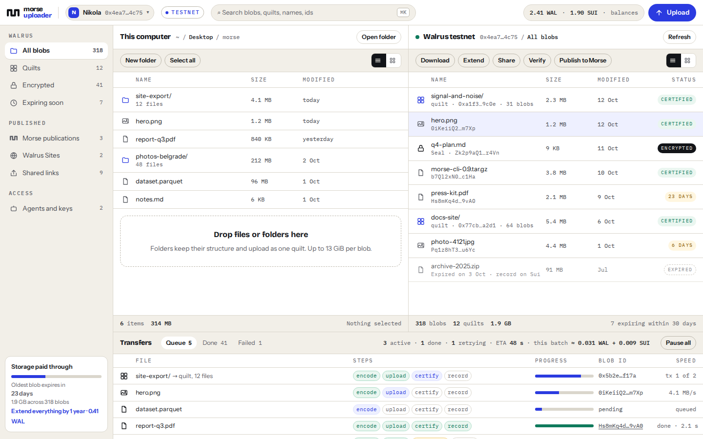

A two-pane transfer client for Walrus: drag folders in, watch each blob encode, upload and certify, see the cost before you sign, and manage every blob your wallet owns. No account, no API key, no custodian.

Local on the left, your Walrus blobs on the right, transfers at the bottom with encode, upload, certify and record as separate steps you can see.
Drop a folder and it uploads as one quilt with paths intact. Or one blob per file when you need separate lifetimes.
Encoded size, storage per period, write fee and gas, read from the chain at that moment. Expiry tracked per blob with one-click extend.
Re-check any blob against storage nodes, share aggregator or Walrus Site links, or attach a blob to a Morse publication as an entry with a record.
| Walrus Console | Morse Uploader | |
|---|---|---|
| Login | Google or Apple account | Any Sui wallet, no account |
| Who holds the keys | Console manages WAL and payment for you | You. Every transaction is signed by your wallet |
| Limits | 5 GB per space, 5 folders, 100 MiB per upload | Walrus limits only: 13 GiB per blob, as many as you pay for |
| Folders | Encrypted private folders | Quilts with paths, public or Seal-encrypted, your choice per folder |
| Epochs and expiry | Managed and auto-extended by Console | Visible per blob, extend by hand or auto-extend from your wallet with a WAL cap |
| Verification | Upload status polling | Re-verify any blob against storage nodes, any time |
| Publishing | Not in scope | Attach blobs to Morse publications, deploy Walrus Sites |
| Agents | MCP server with API keys | MCP server with a wallet-scoped capability you can revoke |
| Where it runs | Hosted | Browser now, desktop app next, open source |